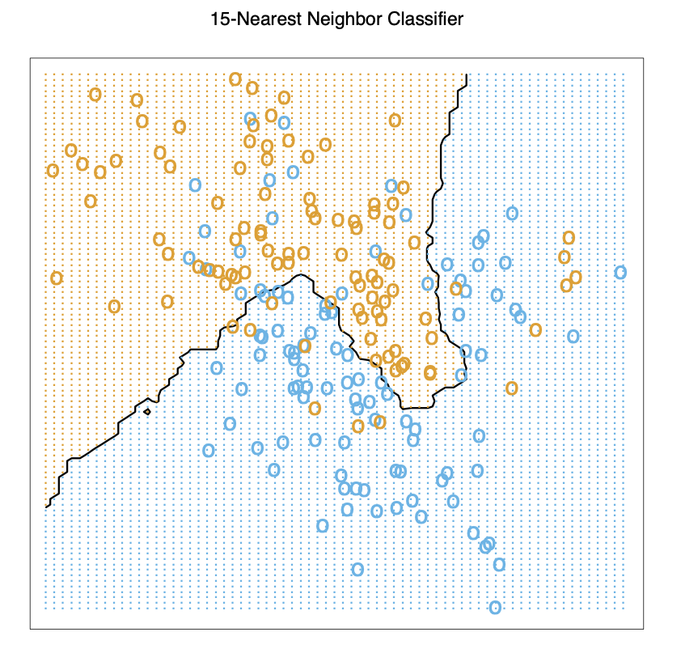
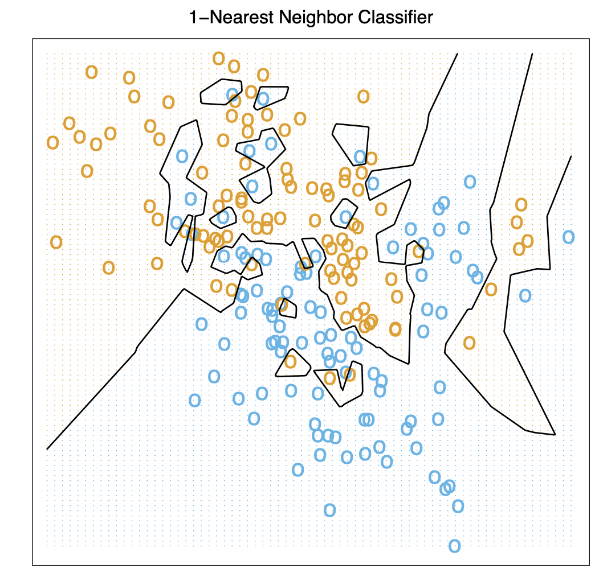

1.2 Nearest Neighbor
 
1.2.1 Basic Functions
\(N_k(x)\) is neighbor of x, assuming Euclidean distance.
\[
\begin{align}
\hat Y(x) &=\frac{1}{k}\sum_{x_i\in N_k(x)} y_i \\
\end{align}
\]
1.2.2 Summary
- Effective number of parameters for KNN is \(N/k\) while for MLS is p (number of \(\beta_i\)), although it seems the number of neighbors k is number of parameter of KNN while p is number of parameter of MLS. And \(N/k\) is usually larger than p.
To get an idea of why, if all neighborhoods are nonoverlapping, KNN computes \(N/k\) parameters (one mean for each neighborhoods).
- More fit for Scenario: The training data in each class came from a mixture of 10 low- variance Gaussian distributions, with individual means themselves distributed as Gaussian.
- We cannot use Sum Square Error for KNN, because it will always goes to k=1.
1.2.3 From Least Square to Nearest Neighbor
| Least Square | K Nearest Neighbor | |
|---|---|---|
| Assumption | a linear boundary is appropriate | no straight assumption |
| Reason | Depends on hadful points and their particular position, slightly changes may cause result changing. | |
| Variance | low | high |
| Bias | high | low |
| Stability | unstable | |
| Scenario | The training data in each class were generated from bivariate Gaussian distributions with uncorrelated components and different means. | The training data in each class came from a mixture of 10 low- variance Gaussian distributions, with individual means themselves distributed as Gaussian. |
Methods to enhance KNN and LS
- Kernel methods use weights that decrease smoothly to zero with dis- tance from the target point, rather than the effective 0/1 weights used by k-nearest neighbors.
- In high-dimensional spaces the distance kernels are modified to em-phasize some variable more than others.
- Local regression fits linear models by locally weighted least squares, rather than fitting constants locally.
- Linear models fit to a basis expansion of the original inputs allow arbitrarily complex models.
- Projection pursuit and neural network models consist of sums of non-linearly transformed linear models.